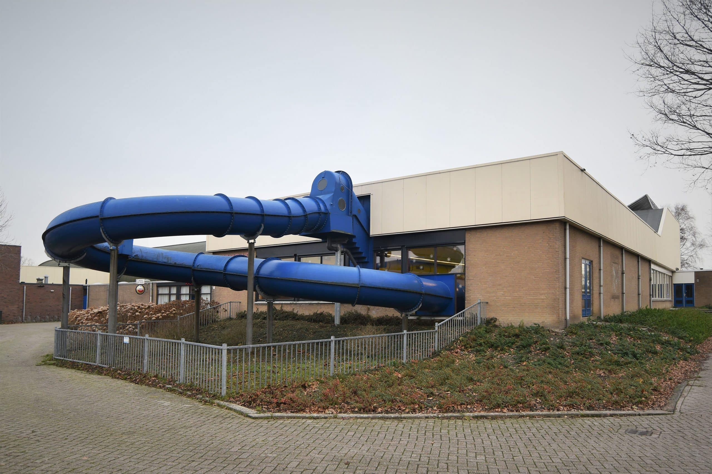

Sinds 1989 · Oostelijk West-Friesland
Zwemmen met een hart voor elkaar.
Zwemvereniging Hartelust biedt aangepast zwemmen voor hart- en vaatpatiënten en mensen met Familiaire Hypercholesterolemie in een veilige, warme omgeving.
Over ons
Een vereniging met een verhaal van 37 jaar.
Op 21 maart 1989 werd Zwemvereniging Hartelust opgericht voor mensen die na een hartincident weer veilig in beweging willen komen. Vandaag de dag tellen we 67 leden uit heel Oostelijk West-Friesland.
We zijn er voor (oud-)hartpatiënten, vaatpatiënten en mensen met Familiaire Hypercholesterolemie (FH). Het tempo is rustig, de sfeer warm — en na afloop drinken we samen koffie in clubhuis "de Spetter".
- 1989Opgericht
- 67Leden
- 28,5°CWatertemperatuur
Trainingen
Elke maandagochtend, in twee groepen.
Maandag
08:30 – 09:15
Eerste groep
Maandag
09:15 – 10:00
Tweede groep
Warm water
Het bad is verwarmd tot 28,5°C — comfortabel voor stramme spieren en gewrichten.
Veilig zwemmen
Tijdens elke training is er een badmeester, een reanimator en een AED aanwezig.
Makkelijke toegang
Het zwembad heeft een oprijbare helling, zodat in- en uitstappen veilig en moeiteloos gaat.
Voorwaarde: nieuwe leden moeten zelfstandig kunnen zwemmen.
Locatie
We zwemmen in Zwembad De Kloet.
Een fijn, toegankelijk zwembad in Grootebroek met een oprijbare helling en lekker warm water — ideaal voor ons rustige tempo.
Zwembad De KloetRaadhuislaan 8
1613 KR Grootebroek

Lidmaatschap
Vijftig euro per jaar. Inclusief koffie.
€50/jaar
- Wekelijkse training in twee groepen
- Koffie of thee na het zwemmen in clubhuis "de Spetter"
- Toegang tot bingoavonden en de jaarvergadering
- Betaling via automatische incasso
Clubleven
Meer dan alleen zwemmen.
Voor ons hoort het sociale deel er net zo bij. Na de training schuiven we aan in clubhuis "de Spetter" voor een kop koffie of thee — vaak het echte hoogtepunt van de ochtend.
Door het jaar heen organiseren we bingoavonden en houden we onze jaarvergadering, waar leden meepraten over hoe we de vereniging verder brengen.
Bestuur
De mensen achter Hartelust.
- Theo Hogers
- Ans Sijm-Koster
- Hans Strietman
- Trudy Ligthart-Hoffer
- Jan Schouten
- Hannie de Haas
Contact